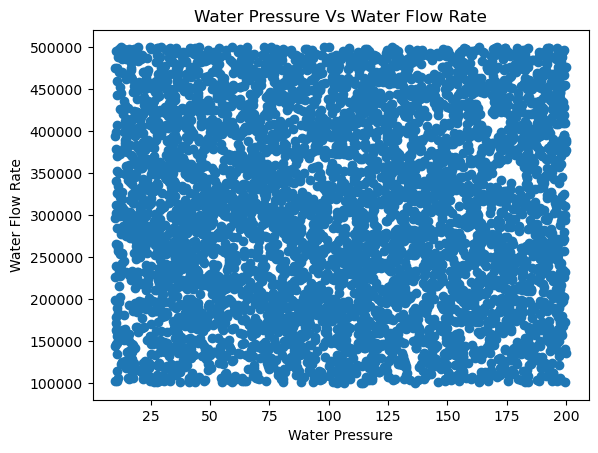
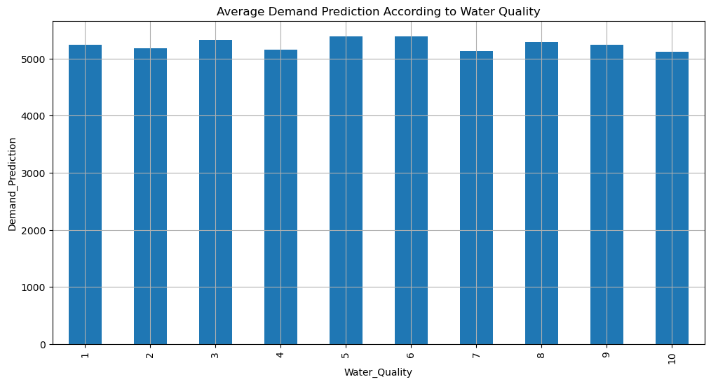
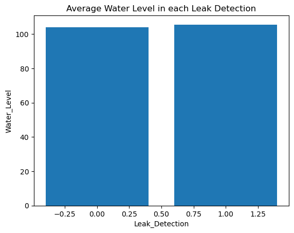
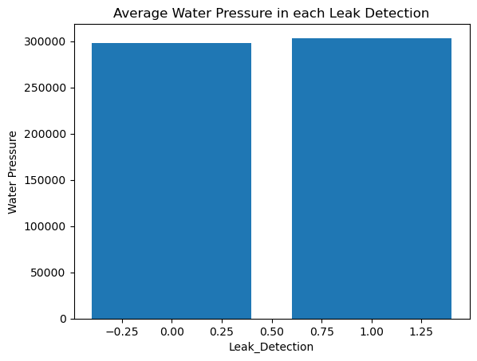
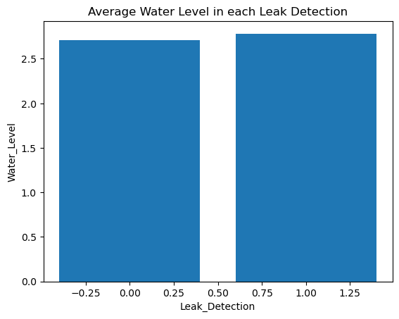
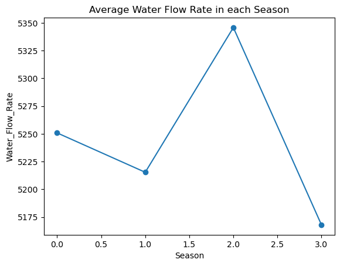
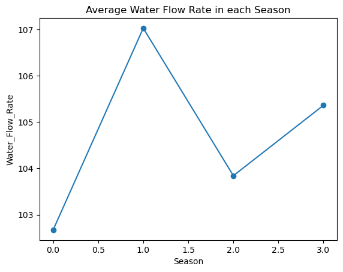
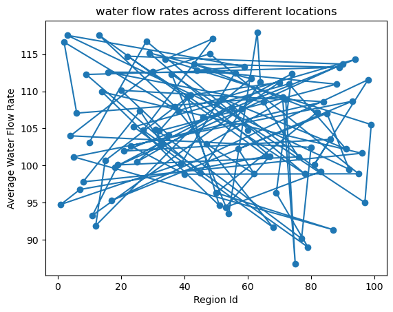
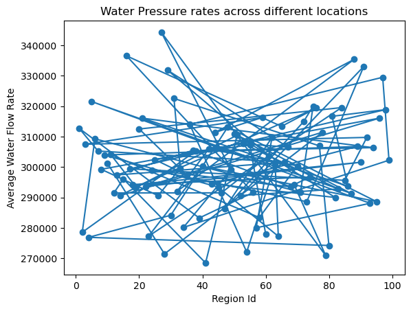

Real-Time Metrics
Average Water Flow
Loading...
Average Water Pressure
Loading...
Water Quality
Good(6-10)
Average Water Consumption
500
Predictive Analytics
Water demand forecast based on historical data and seasonal trends:
Reports and Analytics
Detailed reports and analysis on system performance, water usage, and efficiency.









Inferences from the Dataset
- 1. 994 Sensors are used for this project to collect the data.
- 2. Average Water Flow Rate is 104 liters.
- 3. Maximum and Minimum Water Flow Rates are: 199.94, 10.05 liters/minute.
- 4. Average Water Pressure: 300842.52 Pascals.
- 5. Minimum Water Pressure: 100050.22 Pascals.
- 6. Maximum Water Pressure: 499933.19 Pascals.
- 7. Demand for Water Quality 5 is High.
- 8. 2000+ Pipes are Having Water Leakage Problem.
- 9. Water Flow Rate is High if Leaks are not there.
- 10. Water Pressure Rate is High if there are no leaks.
- 11. Water Level is High if there are no leaks.
- 12. Almost 2500+ Pumps require Maintenance.
- 13. Almost 1200+ Pipes require Maintenance like Fixing the Leaks.
- 14. 2000+ Pipes Age is more than 50 years.
- 15. 2400+ Pumps are Inactive and They Need Maintenance.
- 16. The Demand for Water is High in Summer.
- 17. The Water Flow Rate is less in Summer, causing Water Scarcity.